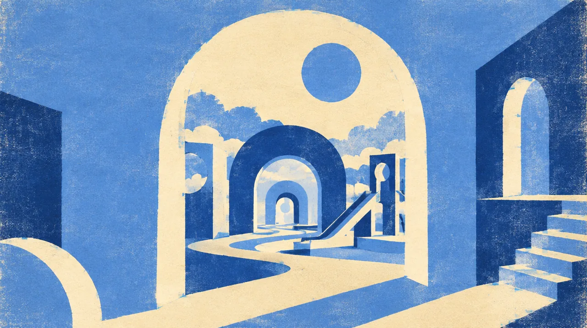

ADVENTURE · SEP 13 · Anaheim
BLIZZCON
A day in worlds built for play.
Some worlds are better when we step into them together.
This date has passed.
This date has passed. The page keeps it as part of the year; it does not claim who went.
- When
- Sun Sep 13, 2026
- Where
- Anaheim Convention Center, Anaheim · Directions
- Light
- A daylight chapter
Dig into the sound and story
2 short chapters. Open the ones that call to you.
THE ORIGINA screen became a gathering.
BlizzCon began in 2005. Its original idea was beautifully simple: bring the people inside Blizzard’s game worlds into a room with one another. By 2026, the tradition includes hands-on games, competition, deep-dive panels and the Darkmoon Faire.
THE THREADPlay is a way to find people.
A convention and a dance floor have something in common: for a little while, the thing you love becomes the place you are. Follow this thread to Pokémon Night Out, where a game world meets Alison Wonderland and Marshmello.
Same crew, other nights
Swipe the picture, or use the arrow keys, for the next night.